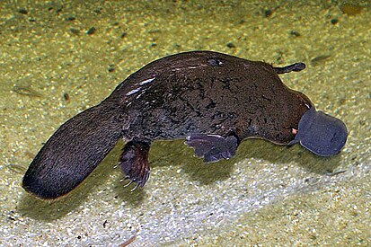

Утконо́с[2] (лат. Ornithorhynchus anatinus) — водоплавающее млекопитающее отряда однопроходных, обитающее в Австралии. Это единственный современный представитель семейства утконосовых (Ornithorhynchidae); вместе с ехидновыми образует отряд однопроходных (Monotremata) — млекопитающих, по ряду признаков напоминающих рептилий и немаммальных цинодонтов. Это уникальное животное является одним из символов Австралии; оно изображено на реверсе австралийской монеты в 20 центов.
Утконос был открыт в XVIII веке во время колонизации Нового Южного Уэльса. В опубликованном в 1802 году списке животных этой колонии упоминается «животное-амфибия из рода кротов. Наиболее любопытное его качество — это то, что оно обладает вместо обычного рта утиным клювом, позволяющим ему питаться в иле, как птицам».
Первая шкура утконоса была прислана в Англию в 1797 году. Её вид породил ожесточённые споры среди научной общественности. Сначала шкуру сочли изделием какого-то таксидермиста, пришившего утиный клюв к шкуре зверька, похожего на бобра. Рассеять это подозрение удалось Джорджу Шоу, изучившему посылку и пришедшему к выводу, что это не подделка (для этого Шоу даже надрезал шкуру в поисках стежков). Возник вопрос, к какой группе животных отнести утконоса. Уже после того, как он получил своё научное название, в Англию были доставлены первые зверьки, и выяснилось, что у самки утконоса нет видимых молочных желёз, зато это животное, подобно птицам, имеет клоаку. Четверть века учёные не могли решить, куда отнести утконоса — к млекопитающим, птицам, пресмыкающимся или вообще к отдельному классу, пока в 1824 году немецкий биолог Меккель не обнаружил, что у утконоса всё-таки имеются молочные железы, и самка выкармливает детёнышей молоком. То, что утконос откладывает яйца, было доказано только в 1884 году натуралистом Уильямом Колдуэллом.
Зоологическое имя этому странному животному дал в 1799 году английский натуралист Джордж Шоу — Platypus anatinus, от др.-греч. πλατύς — широкий, плоский, πούς — лапа и лат. anatinus — утиный. В 1800 году Иоганн-Фридрих Блуменбах во избежание омонимии с родом жуков-короедов Platypus изменил родовое название на Ornithorhynchus, от др.-греч. ὄρνις — птица, ῥύγχος — клюв. Аборигены Австралии знали утконоса под многими именами, включая mallangong, boondaburra и tambreet. Ранние европейские переселенцы называли его «утконос» (duckbill), «уткокрот» (duckmole) и «водяной крот» (watermole). В настоящее время в английском языке используется название platypus. В русском языке закрепилось название «утконос».
Длина тела утконоса 30—40 см, хвоста — 10—15 см, весит он до 2 кг. Самцы примерно на треть крупнее самок. Тело у утконоса приземистое, коротконогое; хвост уплощённый, похож на хвост бобра, но покрыт шерстью, которая с возрастом заметно редеет. В хвосте утконоса, как у тасманийского дьявола, откладываются запасы жира. Мех у него густой, мягкий, обычно тёмно-коричневый на спине и рыжеватый или серый на брюхе. Голова круглая. Впереди лицевой отдел вытянут в плоский клюв длиной около 65 мм, шириной 50 мм. Клюв не жёсткий, как у птиц, а мягкий, покрытый эластичной голой кожей, которая натянута на две тонкие, длинные, дугообразные косточки. Ротовая полость расширена в защёчные мешки, в которых во время кормёжки запасается пища. Внизу у основания клюва самцы имеют специфическую железу, продуцирующую секрецию с мускусным запахом. У молодых утконосов имеется 8 зубов, однако они непрочные и быстро стираются, сменяясь ороговевшими пластинками.
Утконос — единственное млекопитающее, имеющее развитую электрорецепцию. Электрорецепторы обнаружены также у ехидны[3], но использование ею электрорецепции вряд ли играет важную роль в поисках добычи.
У утконоса примечательно низкий обмен веществ по сравнению с другими млекопитающими; нормальная температура его тела — всего 32 °C. Однако при этом он прекрасно умеет регулировать температуру тела. Так, находясь в воде при 5 °C, утконос может в течение нескольких часов поддерживать нормальную температуру тела за счёт увеличения уровня метаболизма более чем в 3 раза.
Однопроходные являются выжившими представителями одной из самых ранних ветвей млекопитающих. Возраст древнейшего однопроходного, обнаруженного в Австралии, — 110 млн лет (Steropodon). Это был небольшой, похожий на грызуна зверёк, который вёл ночной образ жизни и, скорее всего, не откладывал яиц, а рожал сильно недоразвитых детёнышей. Окаменелый зуб другого ископаемого утконоса (обдуродон), найденный в 1991 году в Патагонии (Аргентина), указывает, что, скорее всего, предки утконоса попали в Австралию из Южной Америки, когда эти континенты входили в суперконтинент Гондвана. Ближайшие предки современного утконоса появились около 4,5 млн лет назад, тогда как самый ранний ископаемый образец собственно Ornithorhynchus anatinus датируется плейстоценом. Ископаемые утконосы напоминали современных, но были меньше по размерам.
В мае 2008 года было объявлено, что расшифрован геном утконоса. У утконоса пол определяется не одной парой, а пятью парами половых хромосом[5]. Секвенирование генома утконоса[6] показало что половые хромосомы утконоса имеют больше сходства с Z-хромосомой птиц, а ген SRY, вероятно, не участвует в его половой дифференциации[7]. Кроме того, 166 млн лет назад у однопроходных отсутствовало хромосомное определение пола[7]. Оценка возраста хромосомной системы определения пола базируется на исследованиях, показавших, что последовательности в X-хромосоме сумчатых и плацентарных млекопитающих присутствуют в аутосомах утконоса и птиц[7][8]. Анализ полных геномов ехидны и утконоса 2021 года показывает, что предки ехидновых и утконосовых разделились 55 млн лет назад (эоцен)[9].
